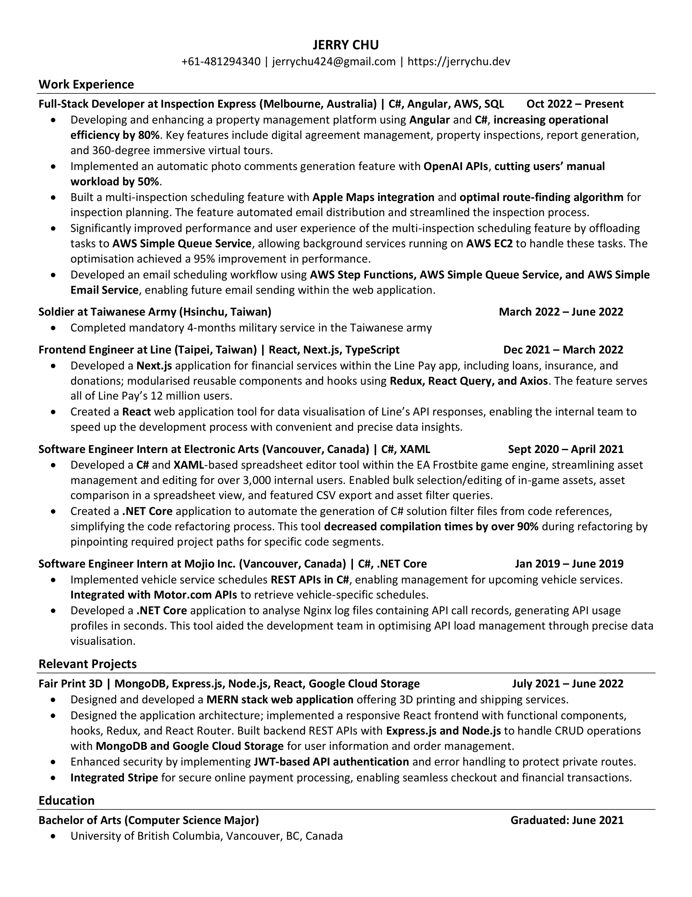

Full-stack Software Engineer | Melbourne, Victoria | Oct '22 -
Ongoing
As a Full-Stack Software Engineer at Inspection Express, I am
helping to develop a property management platform using Angular and
C#, boosting operational efficiency for our clients by 80%. Our key
features include digital agreement management, property inspections,
report generation, and 360-degree virtual tours. I integrated OpenAI
APIs for automatic photo comments, reducing manual workload by 50%.
I implemented a multi-inspection scheduling feature with Apple Maps
integration and built a route-finding algorithm, streamling the
inspection planning process for our users. And I improved the
multi-inspection scheduling's performance by 95% using AWS Simple
Queue Service for task offloading. I also developed an email
scheduling workflow with AWS Step Functions and Simple Email Service
for seamless future integration within the application.
Frontend Engineer | Taipei, Taiwan | Dec '21 - Mar '22

During my time at Line Pay, I orchestrated the architecture and
built the frontend application for financial services including
loans, insurance, and donations within the Line Pay ecosystem using
Next.js. I prioritized modular components and hooks for enhanced
reusability, integrating tools like Redux, React Query, Axios, and
more. Additionally, I developed an internal application utilizing
Line Frontend Framework to provide clear visualization of data from
Line's extensive APIs, both internal and external. This application
significantly accelerated the development process for Line Pay's
teams by streamlining data presentation.

Software Engineer Intern | Vancouver, BC | Sep '20 - Apr '21
During my time at EA, I developed a spreadsheet editor tool within
the Frostbite game engine using C#, XAML, and Visual Studio. This
tool enables simultaneous editing of multiple in-game assets while
facilitating value comparison in a spreadsheet format.
Additionally, I designed an internal application using C# and .NET
Core to automate the creation of C# solution filter files. These
files contained essential project paths necessary for compiling
and executing code based on its references, enhancing efficiency
in development processes by reducing code compilation time by over
90%.
Software Engineer Intern | Vancouver, BC | Jan '19 - Jun '19

During my time at Mojio, I oversaw the maintenance and development
of REST APIs as part of the backend platform team, utilizing Visual
Studio and C#. I crafted two internal applications: one for
visualizing and analyzing API calls received by our servers, and
another for simulating the transmission of Mojio's device messages
directly to Azure for testing purposes. Additionally, I spearheaded
the design and implementation of the vehicle service schedule APIs
within the Mojio product.
Software Engineer Intern | Vancouver, BC | Sep '18 - Dec '18
My first technical role was a VR game engineer intern with Archiact
in Vancouver, Canada. Collaborating with senior game designers and
other software engineers, I was responsible for designing and
implementing the prototype of a space survival VR game for Oculus Go
using Unity and C#.
